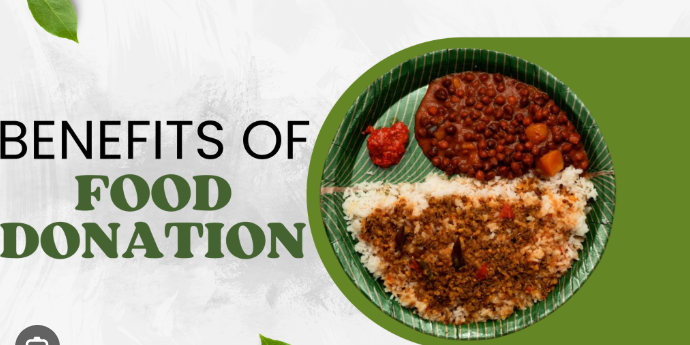

BORDER=6>
Food Shelter in Chennai is a charitable organization dedicated to providing free meals to the underprivileged and homeless individuals in the city. Established with the mission to combat hunger and food insecurity, Food Shelter operates multiple kitchens and distribution centers across Chennai. They rely on donations and volunteer support to prepare and serve nutritious meals daily, ensuring that those in need have access to food. The organization also focuses on raising awareness about hunger issues and advocates for sustainable solutions to address food poverty in the community.